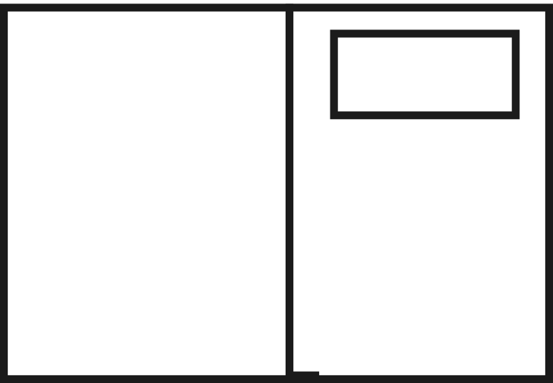
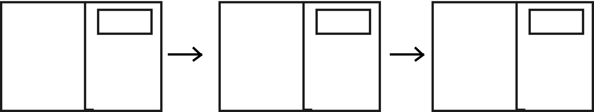

Nous souhaitons relever un défi : celui de montrer qu'il est possible d'écrire un roman avec plusieurs centaines voire milliers de personnes en même temps. Écrire un livre est une envie partagée par beaucoup de gens, seulement ce n'est pas une mince affaire, cela demande de l'expérience et du temps. Nous avons créé unkilodeplumes pour donner à tous ces gens l'opportunité de participer à la création d'une œuvre à mille mains sans leur demander beaucoup d'investissement. La base du projet sera simplement de donner son avis, de soulever des questions et de partager ses idées.
Écrire ensemble, ce n'est pas une façon différente d'écrire un roman mais une façon d'écrire un roman différentBeaucoup pensent que cela est impossible, qu'écrire est l'affaire d'un auteur unique et que le faire à plusieurs ne donnera jamais rien de bien. Nous pensons le contraire. La force de la collaboration réside dans la diversité de vos expériences et anecdotes personnelles, de vos connaissances et de vos visions du monde. Faire de cette diversité le cœur d'un roman, une création littéraire d'un nouveau genre, est le défi de unkilodeplumes. Le roman ne serait alors pas une imitation du travail d'un écrivain, mais à l'inverse, une création qu'un écrivain n'aurait pas pu réaliser seul.
Le roman collaboratif sur internet a déjà été tenté à partir de plateformes préexistantes telles que les wiki ou github. unkilodeplumes veut aller plus loin en étant le premier à développer une interface et des outils conçus spécialement pour le roman collaboratif. Nous n'allons pas nous contenter de juxtaposer les phrases de chaque auteur les unes derrière les autres et appeler ça un "roman collaboratif". unkilodeplumes va donner aux internautes les moyens de réellement collaborer: modifier, débattre, voter, créer ensemble... Il ne s'agit pas se diviser le travail de l'écriture, mais de repenser ce travail à l'échelle du collectif.
Pas de séparation entre texte du roman et débats.
Sur chaque page du site, vous trouverez à la fois:
• le texte du livre (par exemple une fiche personnage, un chapitre ou encore un débat...)
• des fils de discussions (de type forum) autour de ce texte.

Pour ce projet, nous avons créé un nouvel outil de discussion: commented.it. SOn originalité: Il vous donne la possibilité, en plus de commenter, de proposer des modifications du texte.
1) Entrez un commentaire dans la partie discussion, le texte de la page
devient alors modifiable.
2) Modifiez le texte. Puis validez votre commentaire.
3) Affichez les propositions de modifications en cliquant sur les messages.
Une version simplifiée de démonstration occupe la partie droite de cette page de présentation. Laissez nous un commentaire, et amusez vous à modifier le texte !
Pour être prévenu du lancement du projet, inscrivez vous à la newsletter.